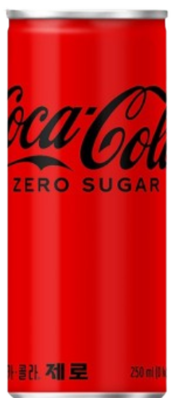

모아보기
기업 소개
고객 지원

웰치스 제로
웰치스 제로에 대한 반응은 대체로 긍정적입니다. 많은 사람들이 칼로리가 낮고 설탕이 없는 점을 좋아하며, 포도나 오렌지 등, 웰치스 특유의 과일 맛이 향긋하다고 평가합니다. 이에 건강을 생각하는 소비자들 사이에서 인기가 높아지고 있는 추세인데요. 기존의 웰치스 본품과 일부 다른 점은 기존의 쨍한 포도 맛과 다르게, 제로는 맹한 맛이 있고 뒷맛이 심심하면서 마무리가 깔끔한 것이 특징입니다. 오히려 끈적끈적한 점이 없다는 점이 많은 탄산 애호가들의 마음을 사로 잡고 있습니다. 칼로리가 0임에도 불구하고 다른 음료들에 비해 상대적으로 높은 퀄리티를 가지고 있습니다. 탄산 음료를 마시고 싶으면서 건강도 챙기고 싶을 때 대체 선택지로 좋을 듯합니다.
더 알아보기